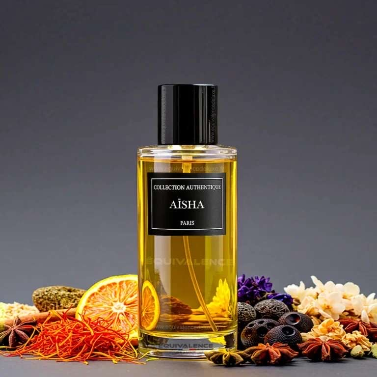
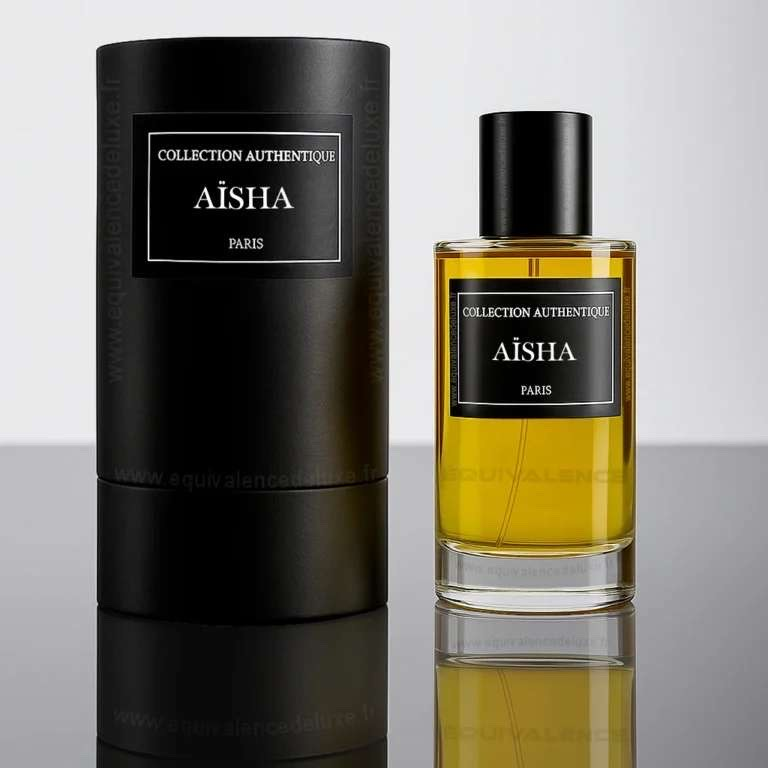

Description
Aisha est un parfum oriental profond et ensorcelant. Sa fragrance s’ouvre sur des notes de safran et de rose, s’épanouit avec un cœur d’ambre et de bois précieux, et se conclut sur une touche sucrée de vanille.
Inspiration
Inspirée des mystères du désert et des palais orientaux, Aisha incarne l’élégance envoûtante d’une nuit étoilée. Idéal pour les âmes passionnées qui laissent une empreinte dans leur sillage.
Notes Olfactives
- Tête : Safran, Rose
- Cœur : Ambre, Bois précieux
- Fond : Vanille, Musc